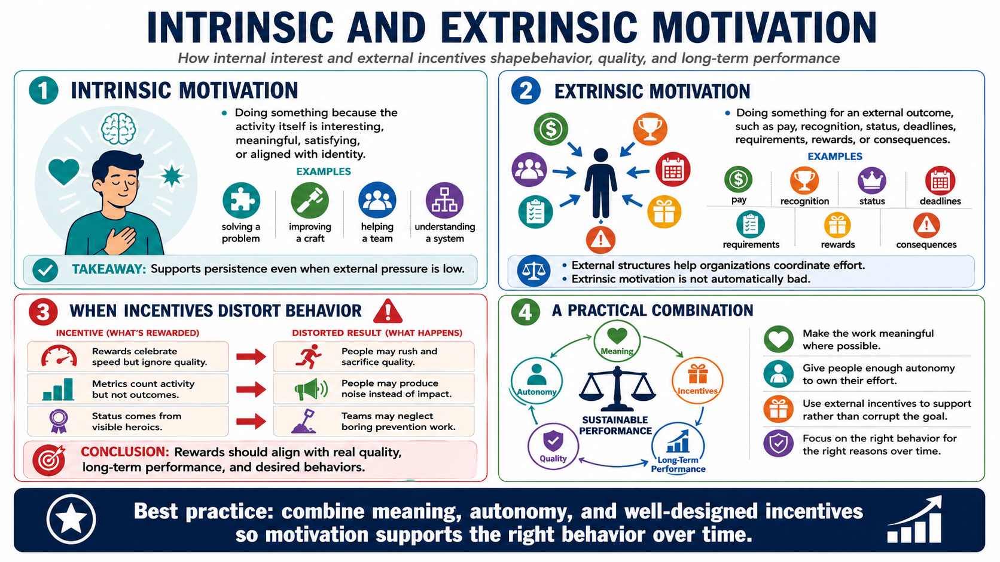

Intrinsic and Extrinsic Motivation
Connecting to LMS... Progress: in progress

Narration
Intrinsic motivation means doing something because the activity itself is interesting, meaningful, satisfying, or aligned with identity. A person might enjoy solving a problem, improving a craft, helping a team, or understanding a system more deeply. Intrinsic motivation is valuable because it can support persistence even when external pressure is low.
Extrinsic motivation means doing something for an external outcome, such as pay, recognition, status, deadlines, requirements, rewards, or consequences. Extrinsic motivation is not automatically bad. Deadlines can help people prioritize. Recognition can reinforce valuable work. Rewards can focus attention on an important behavior. External structures are part of how organizations coordinate effort.
The risk is that poorly designed incentives can distort behavior. If the reward system celebrates speed but ignores quality, people may rush. If metrics count activity but not outcomes, people may produce noise. If status comes from visible heroics, teams may neglect boring prevention work. Rewards should be aligned with real quality, long-term performance, and the behaviors the organization actually wants to see.
A practical approach is to combine motivation sources thoughtfully. Make the work meaningful where possible, give people enough autonomy to own their effort, and use external incentives to support rather than corrupt the goal. The question is not whether intrinsic or extrinsic motivation is better in every case. The question is whether the motivation system encourages the right behavior for the right reasons over time.